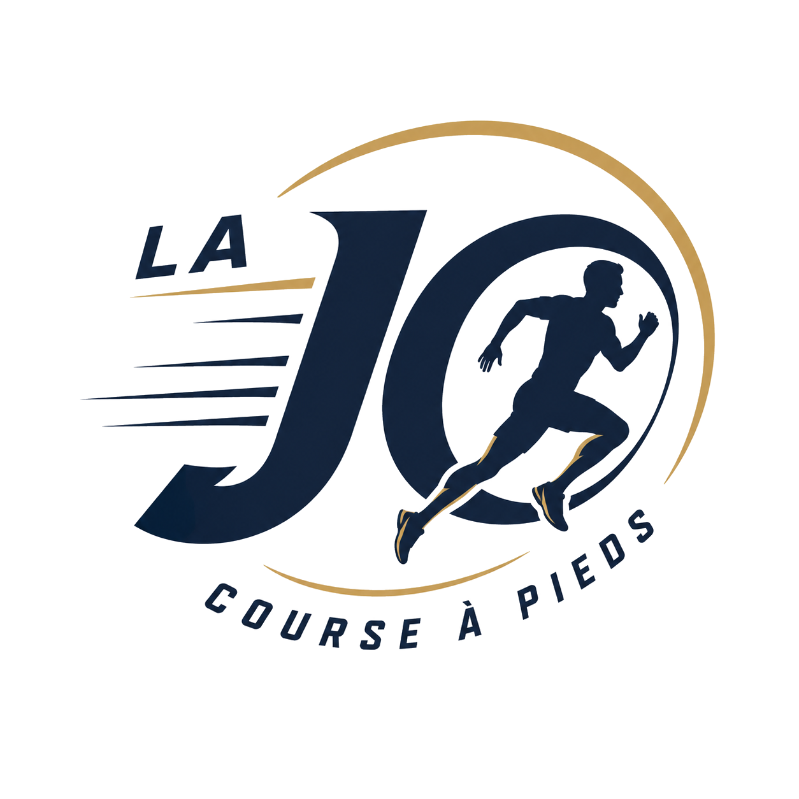

Jojo hésite encore entre trois options. Le plan ci-dessous sera mis à jour dès qu'il aura choisi — ou dès qu'il changera d'avis le matin de la course.
Le tracé que Jojo préfère sur le papier, tant qu'il ne l'a pas testé en vrai.
Plan de repli si le parcours A passe trop près de la boulangerie qui distrait Jojo.
Version courte, activée si Jojo se réveille fatigué le dimanche matin.
Les inscriptions sont closes — mais vous pouvez toujours remplir le formulaire pour le principe, ou pour la prochaine édition, si Jojo se décide un jour.